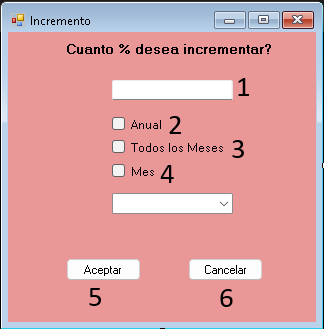

Ayuda Incremento
i- 1.Textbox de porcentaje: Permite ingresar el porcentaje que se desea aplicar como incremento.
- 2.Anual: Aplica el incremento al presupuesto anual de la cuenta seleccionada.
- 3.Todos los meses: Incrementa el porcentaje para cada mes de la cuenta seleccionada.
- 4.Mes: Permite aplicar el incremento a un mes específico. El usuario deberá seleccionar el mes al que desea aplicar el porcentaje.
- 5.Botón Aceptar: Confirma y aplica los datos ingresados.
- 6.Botón Cancelar: Cancela la operación y descarta los cambios.